ECG Blog #349 — Có nhát bắt được (capture) không?
Dải nhịp (rhythm strip) chuyển đạo II trong Hình-1 — được ghi ở một người đàn ông 60 tuổi nhập viện vì chấn thương chỉnh hình. Không đau ngực. Ổn định huyết động với nhịp này. Bản ghi 12 chuyển đạo không thấy tổn thương cấp. Bệnh nhân có kể tiền sử "một hoặc hai lần ngất xỉu".
CÂU HỎI:
- BẠN sẽ diễn giải nhịp trong Hình-1 như thế nào?
- Có nhát bắt được (capture) không?

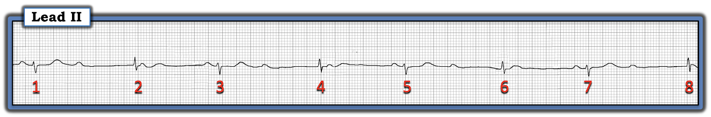
Cách tiếp cận CỦA TÔI với điện tâm đồ ở Hình-1:
Như mọi khi — cách tiếp cận chẩn đoán nhịp của tôi gói gọn trong mẹo ghi nhớ "Watch Your Ps, Qs and the 3Rs" (Xem ECG Blog #185):
- Tần số (Rate) chung của nhịp hôm nay chậm (tức là ~40-50/phút). Dù nhịp không đều (Regular) — vẫn có một "quy luật" dưới dạng nhịp đôi (bigeminal) (tức là có các cặp nhát mà khoảng cách tới phức bộ QRS đứng trước là tương tự nhau).
Trong Hình-2 — tôi minh hoạ bằng sơ đồ rằng có các khoảng R-R dài-rồi-ngắn xen kẽ nhau (các đường XANH và ĐỎ trong Hình-2 cho thấy các khoảng R-R rất giống nhau, luân phiên theo kiểu "nhịp đôi").
- LƯU Ý: Phải thừa nhận rằng mối liên hệ giữa các khoảng R-R xen kẽ không hoàn hảo (tức là khoảng R-R giữa nhát #5-6 có vẻ dài hơn một chút so với các khoảng R-R đường XANH khác). Nhưng nhìn chung — việc rất nhiều khoảng R-R xen kẽ lặp lại — gợi ý rằng điều này không phải do ngẫu nhiên (và có một dạng dẫn truyền nào đó)!

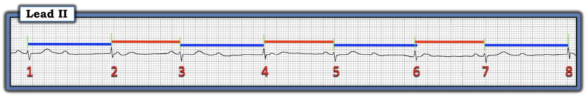
Tiếp tục với Ps, Qs & 3Rs:
- Cả 8 nhát trong nhịp hôm nay đều có phức bộ QRS hẹp. Tuy vậy — các nhát số lẻ trông hơi khác các nhát số chẵn. Dù biết rằng ta chỉ đang nhìn một chuyển đạo — việc phức bộ QRS trông hẹp như vậy ở chuyển đạo II này gợi ý rằng tất cả các nhát trong bản ghi hôm nay đều trên thất!
- ĐIỂM THEN CHỐT (PEARL) #1: Dù có thể lý do khiến hình dạng QRS của các nhát số lẻ so với số chẵn hơi khác nhau là do dẫn truyền lệch hướng (aberrant conduction) — nhiều khả năng hơn, lý do của khác biệt nhỏ về hình thái QRS này là các nhát #1,3,5,7 phát sinh từ một vị trí khác với các nhát #2,4,6,8.
Tiếp theo tôi tìm sóng P:
- Việc này dễ làm nhất bằng compa đo (calipers). Đặt compa theo một khoảng P-P gợi ý bởi khoảng cách giữa 2 sóng P bất kỳ mà bạn thấy rõ. Làm vậy cho phép bạn "dò bước" (walk out) ra một nhịp nhĩ khá đều (khoảng P-P thay đổi nhẹ, phù hợp với loạn nhịp xoang — như gợi ý bởi các mũi tên ĐỎ trong Hình-3).

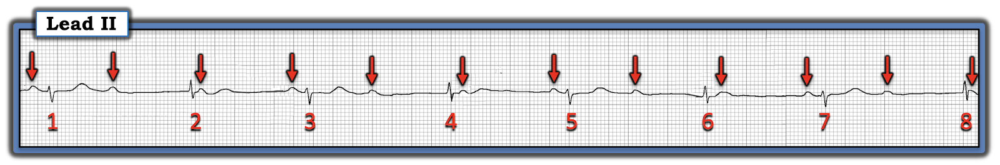
Cuối cùng — thông số cuối cùng trong 5 thông số MẤU CHỐT:
- Thông số cuối cùng khi đánh giá nhịp là R thứ 3 = liên quan (Related). Ta xem các sóng P có hề liên quan tới các phức bộ QRS kế cận hay không.
- Hình-4 — cho thấy có "mối liên quan" giữa sóng P và các phức bộ QRS kế cận — dưới dạng một khoảng PR hằng định (và bình thường) đứng trước các nhát #3,5,7 (tức là các đường ĐỎ nằm ngang ngắn, dài bằng nhau trong Hình-4). Điều này xác nhận các nhát này được dẫn truyền từ xoang.
- LƯU Ý: Tôi không chắc chắn ở Hình-4 — về mối liên quan (nếu có) giữa các sóng P được đánh dấu bằng mũi tên VÀNG — với các phức bộ QRS kế cận của chúng ( = các nhát #2,4,6,8) — vì khoảng cách từ các sóng P này tới QRS kế tiếp có thay đổi (như gợi ý bởi các đường XANH trong Hình-4).

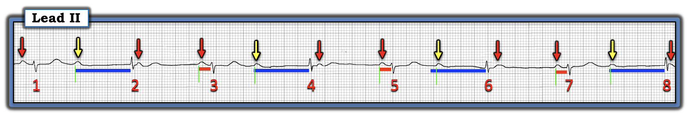
NHẬN ĐỊNH: Câu Trả lời "Ngắn gọn"
Hãy NHÌN LẠI bản ghi hôm nay (Hình-5 — lặp lại từ Hình-1). Đến giờ — chúng ta đã xác lập được những điều sau:
- Nhịp hôm nay là nhịp trên thất — và có "nhịp theo nhóm" (group beating) theo kiểu nhịp đôi (tức là các khoảng R-R dài-rồi-ngắn xen kẽ).
- Có nhịp nền xoang (Như trong Hình-3 — thấy các sóng P khá đều suốt dải nhịp chuyển đạo II = loạn nhịp xoang).
- Các nhát số lẻ được dẫn truyền từ xoang.
- Các nhát số chẵn có vẻ là các nhát thoát bộ nối — vì khoảng PR đứng trước các nhát này rất dài và không hằng định. Ngoài ra — phức bộ QRS hơi khác (ít âm hơn) so với QRS hẹp của các nhát dẫn truyền từ xoang. Hình ảnh này phù hợp với Nhịp đôi "Thoát–Bắt được" (Escape-Capture Bigeminy) — trong đó nhát đầu của mỗi cặp (tức là các nhát #2,4,6,8) là một nhát "thoát" bộ nối — còn nhát thứ 2 của mỗi cặp là nhát "bắt được" (tức là dẫn truyền xoang) của một sóng P xoang đúng lúc (như thấy ở các nhát #3,5,7).
- Cũng có một dạng nào đó của blốc AV độ 2 — vì một số sóng P đúng lúc không dẫn truyền mặc dù có đủ cơ hội để dẫn truyền.
===========================
Vượt ra ngoài phần cốt lõi (Beyond-the-Core): Một số bạn có thể đã nhận thấy khoảng PR đứng trước nhát #1 trông hơi dài hơn khoảng PR đứng trước các nhát số lẻ khác trong bản ghi hôm nay. Như đã ghi trong chú thích Hình-1 — tôi đã số hoá bản ghi hôm nay bằng PMcardio để nhìn rõ hơn. Tiếc là bản ghi gốc tôi nhận được bị gấp — nên hơi biến dạng. Dù tôi nghi rằng khoảng PR trước nhát #1 bằng khoảng PR của các nhát số lẻ khác — phải thừa nhận tôi không chứng minh được điều này.
- Đây là “thực tế” của thế giới hiện nay, khi việc gửi ảnh chụp bằng điện thoại thông minh qua internet mang lại ưu thế tuyệt vời là được hội chẩn gần như tức thì với chuyên gia khắp thế giới — nhưng tiếc là có thể cho độ phân giải chưa tối ưu vì cần chụp “nhanh” bằng điện thoại (không có thời gian quét điện tâm đồ chính xác).
- Tuy vậy — Bất kể khoảng PR trước nhát #1 có (hay không) bằng khoảng PR trước các nhát #3,5,7 — chúng ta biết rằng khoảng PR giống hệt nhau trước các nhát #3,5,7 không phải do ngẫu nhiên (và ít nhất 3 nhát này có được dẫn truyền!). Vì vậy — diễn giải “Điều cốt lõi” của tôi về bản ghi hôm nay vẫn không đổi!
===========================
ĐIỀU CỐT LÕI của “Câu trả lời Ngắn gọn”:
Hình ảnh “nhịp theo nhóm” trong nhịp hôm nay phù hợp với nhịp đôi “Thoát–Bắt được” (Escape-Capture) — do một dạng nào đó của blốc AV độ 2.
- Từ bản ghi đơn lẻ này, chúng ta không thể xác định đây có phải là một dạng blốc AV “mức độ cao” hay không (vì chúng ta không bao giờ thấy 2 sóng P liên tiếp không dẫn truyền dù có đủ cơ hội để dẫn truyền).
- Tuy vậy — tần số thất chung của nhịp hôm nay chậm (tức là khoảng 40-50/phút) — ở người đàn ông 60 tuổi này, đến viện vì chấn thương chỉnh hình và có “1 hoặc 2 lần ngất”.
- Rõ ràng cần đánh giá thêm bệnh nhân này — nhưng xét đến sự hiện diện của triệu chứng + tần số thất chung chậm — trừ khi tìm được một nguyên nhân "có thể khắc phục" (tức là nhịp chậm do thuốc, thiếu máu cục bộ/nhồi máu gần đây, ngưng thở khi ngủ, suy giáp, v.v.) — có thể cần máy tạo nhịp.
- NHẤN MẠNH: Dù phần “phân tích” bằng chữ ở trên về ca hôm nay khá dài — một người đọc có kinh nghiệm dùng compa đo sẽ có thể đi tới kết luận “Điều cốt lõi” của tôi trong không quá 1-2 phút!
========================================
GIẢN ĐỒ BẬC THANG (LADDERGRAM):
Với những ai muốn biết thêm suy nghĩ của tôi về cơ chế nhiều khả năng của nhịp phức tạp hôm nay — Một hình ảnh đáng giá 1.000 lời! Cách dễ nhất để minh hoạ cơ chế tôi nghiêng về là dựng giản đồ bậc thang (laddergram) từng bước — mà tôi làm trong Hình-6 đến -12.
- LƯU Ý: Thực tế lâm sàng — là các rối loạn nhịp phức tạp đôi khi có nhiều hơn một cách giải thích khả dĩ. Đơn giản là không phải lúc nào ta cũng chắc chắn 100% về cơ chế của một rối loạn nhịp từ điện tâm đồ bề mặt. Tuy vậy — NẾU chúng ta dựng được một giản đồ bậc thang thể hiện một lời giải thích hợp lý về mặt sinh lý — thì ta đã xác lập được ít nhất một lời giải khả dĩ.

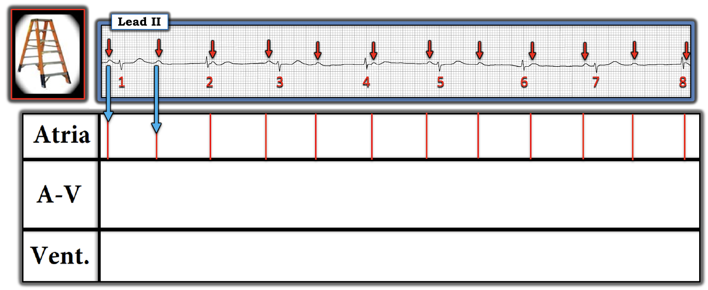

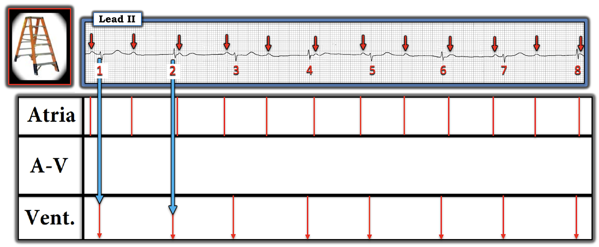

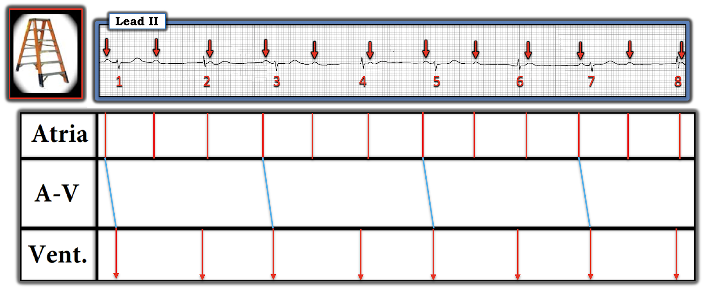

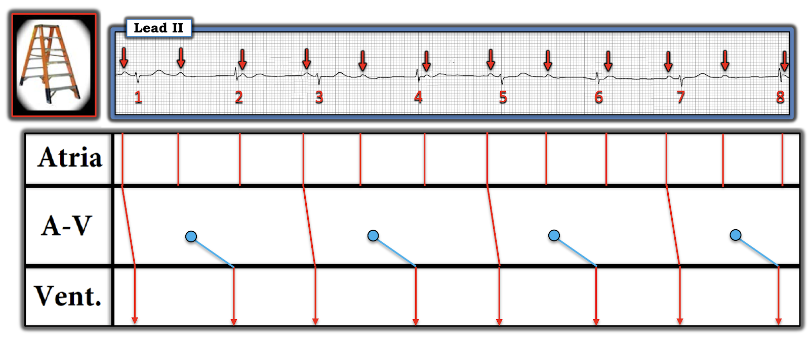

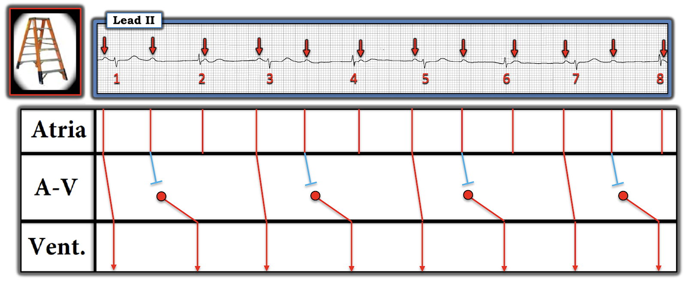

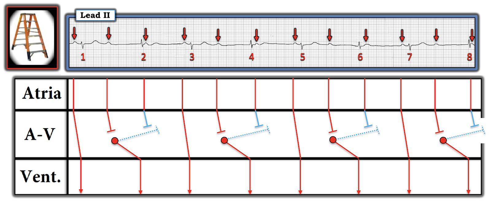

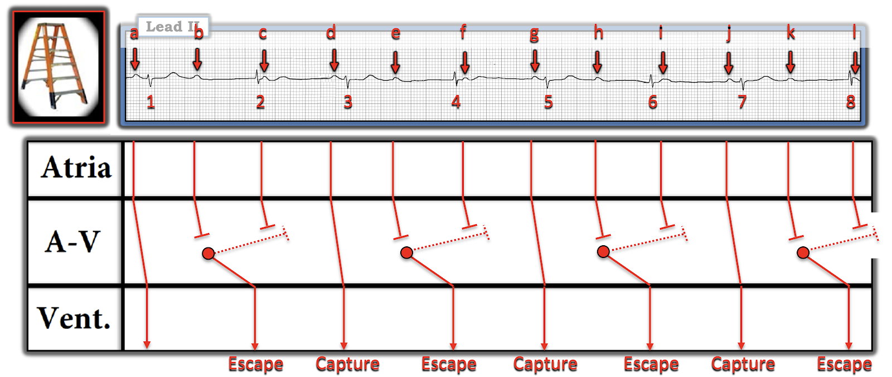
T.B. (P.S.): Có một số cơ chế tiềm năng có thể tạo ra nhịp "thoát–bắt được". Nhịp hôm nay chỉ thể hiện một trong số đó. Các đường link tới những bài Blog liên quan ở dưới cho thấy các cơ chế khác.
==================================
Lời cảm ơn: Tôi xin cảm ơn Praneet Manekar và Bharat Rewaria (từ Amritsar, Ấn Độ) đã chia sẻ ca bệnh và các bản ghi này.
==================================
=======================
Các bài ECG Blog liên quan đến ca hôm nay:
- ECG Blog #185 — Ôn lại cách tiếp cận Ps, Qs, 3R để diễn giải nhịp một cách hệ thống.
- ECG Blog #188 — Ôn lại cách đọc và vẽ giản đồ bậc thang (kèm LINK tới hơn 50 ca có giản đồ bậc thang — nhiều ca có minh hoạ tuần tự từng bước).
- ECG Blog #256 — Nhịp đôi Thoát–Bắt được (với nhát thoát bộ nối và "bắt được" từ dẫn truyền ngược dòng — kèm AUDIO Pearl về "Thoát–Bắt được" và về "hội chứng suy nút xoang" cùng giản đồ bậc thang Từng bước).
- ECG Blog #163 — Nhịp đôi Thoát–Bắt được (do nhịp chậm xoang dẫn đến nhát thoát bộ nối — và có thể kèm blốc SA).
- ECG Blog #315 — Nhịp đôi Thoát–Bắt được (do nhịp chậm xoang rõ rệt).
- ECG Blog #144 — Nhịp đôi Thoát–Bắt được (do blốc AV độ 2 chưa rõ mức độ nặng).